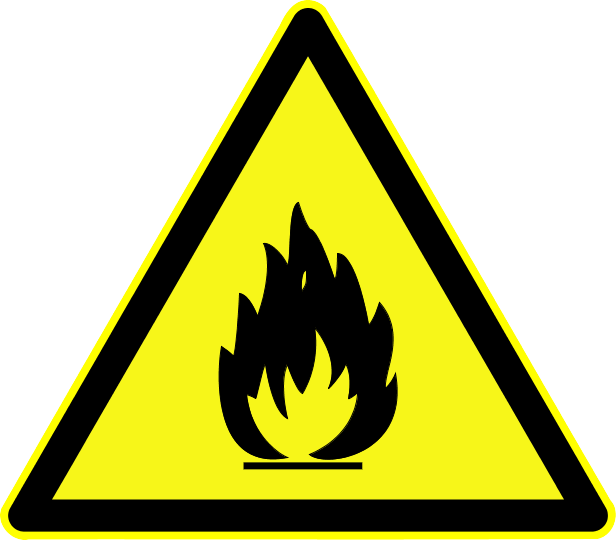
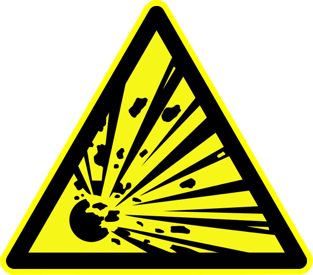

A range of warning symbols derived from a yellow triangle with a black border (see following section) are used to indicate hazards or unsafe practices which could result in damage to the vessel or the injury or death of its operators.
The following symbols are used within the text to draw your attention to warnings and other important points.
| Refer to manufacturer's manual. | |
| Escape route | |
| No open flame or smoking | |
| Warning: risk of high temperature | |
| Warning: risk of electrical shock | |
|  | Warning: risk of fire |
| Warning: unclassified | |
|  | Warning: danger of explosion |
| Warning: remotely started equipment | |
| Fire extinguisher |
As far as possible, drawings supplied with this manual are incorporated into the body of the text, however some large or third-party drawings are inserted in the annexes.
The manuals of the equipment supplied with the ship are bundled and supplied together with this manual and are considered to form an integral part of it. For a list of supplied manufacturer's manuals see List of supplied manuals. Reference to manufacturer manuals in text is often accompanied by the symbol  .
.
 The text of manufacturer supplied manuals always prevails over the text in this owner's manual.
The text of manufacturer supplied manuals always prevails over the text in this owner's manual.